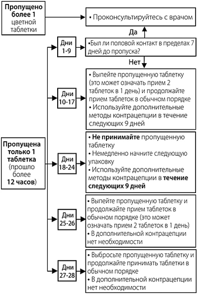

|
 |
| КЛАЙРА® (QLAIRA®) estradiol valerate, dienogest таб., покр. пленочной оболочкой | ||||||||||||||||||||||||||||||||||||||||||||||||||||||||||||||||||||||||||||||||||||||||||||||||||||||||||||||||||||||||||||||
|
Клинико-фармакологическая группа: Контрацептивный комбинированный препарат (эстроген+гестаген) Номер и дата регистрации: ЛП-000010 от 21.10.10 Код ATX: G03AB08 |
Владелец регистрационного удостоверения: зарегистрировано Представительство: | |||||||||||||||||||||||||||||||||||||||||||||||||||||||||||||||||||||||||||||||||||||||||||||||||||||||||||||||||||||||||||||
Форма выпуска, состав и упаковка Набор таблеток, покрытых пленочной оболочкой, пяти видов. Таблетки, покрытые пленочной оболочкой темно-желтого цвета, круглые, двояковыпуклые, с гравировкой "DD" в правильном шестиугольнике на одной стороне; (2 шт. в блистере).
Вспомогательные вещества: лактозы моногидрат - 48.36 мг, крахмал кукурузный - 14.4 мг, крахмал кукурузный прежелатинизированный - 9.6 мг, повидон 25 - 4 мг, магния стеарат - 0.64 мг. Состав оболочки: гипромеллоза - 1.5168 мг, макрогол 6000 - 0.3036 мг, тальк - 0.3036 мг, титана диоксид - 0.584 мг, краситель железа оксид желтый - 0.292 мг. Таблетки, покрытые пленочной оболочкой розового цвета, круглые, двояковыпуклые, с гравировкой "DJ" в правильном шестиугольнике на одной стороне; (5 шт. в блистере).
Вспомогательные вещества: лактозы моногидрат - 47.36 мг, крахмал кукурузный - 14.4 мг, крахмал кукурузный прежелатинизированный - 9.6 мг, повидон 25 - 4 мг, магния стеарат - 0.64 мг. Состав оболочки: гипромеллоза - 1.5168 мг, макрогол 6000 - 0.3036 мг, тальк - 0.3036 мг, титана диоксид - 0.83694 мг, краситель железа оксид красный - 0.03906 мг. Таблетки, покрытые пленочной оболочкой бледно-желтого цвета, круглые, двояковыпуклые, с гравировкой "DH" в правильном шестиугольнике на одной стороне; (17 шт. в блистере).
Вспомогательные вещества: лактозы моногидрат - 46.36 мг, крахмал кукурузный - 14.4 мг, крахмал кукурузный прежелатинизированный - 9.6 мг, повидон 25 - 4 мг, магния стеарат - 0.64 мг. Состав оболочки: гипромеллоза - 1.5168 мг, макрогол 6000 - 0.3036 мг, тальк - 0.3036 мг, титана диоксид - 0.83694 мг, краситель железа оксид желтый - 0.03906 мг. Таблетки, покрытые пленочной оболочкой красного цвета, круглые, двояковыпуклые, с гравировкой "DN" в правильном шестиугольнике на одной стороне; (2 шт. в блистере).
Вспомогательные вещества: лактозы моногидрат - 50.36 мг, крахмал кукурузный - 14.4 мг, крахмал кукурузный прежелатинизированный - 9.6 мг, повидон 25 - 4 мг, магния стеарат - 0.64 мг. Состав оболочки: гипромеллоза - 1.5168 мг, макрогол 6000 - 0.3036 мг, тальк - 0.3036 мг, титана диоксид - 0.5109 мг, краситель железа оксид красный - 0.3651 мг. Таблетки (плацебо), покрытые пленочной оболочкой белого цвета, круглые, двояковыпуклые, с гравировкой "DT" в правильном шестиугольнике на одной стороне; (2 шт. в блистере). Вспомогательные вещества (на 1 таб. (плацебо)): лактозы моногидрат - 52.1455 мг, крахмал кукурузный - 24 мг, повидон 25 - 3.0545 мг, магния стеарат - 0.8 мг. Состав оболочки (на 1 таб. (плацебо)): гипромеллоза - 1.0112 мг, тальк - 0.2024 мг, титана диоксид - 0.7864 мг. 28 шт. - блистеры (1) - книжки-раскладушки (1) с самоклеящимся календарем приема - пленка×. × На прозрачную пленку наносится упаковочный стикер. | ||||||||||||||||||||||||||||||||||||||||||||||||||||||||||||||||||||||||||||||||||||||||||||||||||||||||||||||||||||||||||||||
| ||||||||||||||||||||||||||||||||||||||||||||||||||||||||||||||||||||||||||||||||||||||||||||||||||||||||||||||||||||||||||||||
Описание препарата основано на официально утвержденной инструкции по применению и утверждено компанией-производителем для издания 2023 г. | ||||||||||||||||||||||||||||||||||||||||||||||||||||||||||||||||||||||||||||||||||||||||||||||||||||||||||||||||||||||||||||||
Фармакологическое действие |
Фармакокинетика |
Показания |
Режим дозирования |
Побочное действие |
Противопоказания |
Беременность и лактация |
Особые указания |
Передозировка |
Лекарственное взаимодействие |
Условия хранения и сроки годности |
Условия реализации
Фармакологическое действие
Фармакодинамика Клайра® - комбинированный (эстроген+гестаген) пероральный контрацептивный препарат (КОК). Контрацептивный эффект КОК осуществляется посредством взаимодополняющих механизмов, наиболее важными из которых являются подавление овуляции; повышение вязкости секрета шейки матки, препятствующее проникновению сперматозоидов в полость матки, и изменения в эндометрии, препятствующие имплантации оплодотворенной яйцеклетки. У женщин, принимающих КОК, уменьшаются болезненность и интенсивность менструальноподобных кровотечений, в результате чего снижается риск железодефицитной анемии. Ограниченные эпидемиологические данные свидетельствуют о том, что риск венозной тромбоэмболии (ВТЭ) при применении препарата Клайра® может находиться в том же диапазоне, что и риск при применении других КОК, включая КОК, содержащие левоноргестрел. Комбинация диеногеста и эстрадиола валерата обладает благоприятным эффектом в отношении эндометрия, что может быть применимо для лечения обильных и/или длительных менструальных кровотечений без органической патологии. Эффективность и безопасность комбинации диеногеста и эстрадиола валерата в лечении симптомов дисфункционального маточного кровотечения изучены в двух двойных слепых, плацебо-контролируемых клинических исследованиях. Оба исследования продемонстрировали клинически и статистически значимое уменьшение менструальной кровопотери. Это сопровождалось статистически значимым улучшением показателей метаболизма железа (гемоглобина, гематокрита и ферритина). В качестве эстрогена в препарате Клайра® используется эстрадиола валерат, предшественник естественного 17β-эстрадиола человека (1 мг эстрадиола валерата соответствует 0.76 мг 17β-эстрадиола). Таким образом, эстрадиола валерат отличается от обычно используемых в КОК синтетических эстрогенов - этинилэстрадиола или его предшественника местранола, содержащих этинильную группу в положении 17α. Эта группа обусловливает более высокую метаболическую стабильность, однако также и более выраженное действие на печень. Применение комбинации диеногеста и эстрадиола валерата оказывает менее выраженное действие на печень в сравнении с трехфазными КОК, содержащими этинилэстрадиол и левоноргестрел. Было показано, что влияние на концентрацию глобулина, связывающего половые гормоны (ГСПГ) и параметры гемостаза менее выражено. В комбинации с диеногестом эстрадиола валерат демонстрирует повышение ЛПВП, тогда как концентрация холестерина ЛПНП несколько снижается. Диеногест - производное нортестостерона, не обладающее андрогенной, но проявляющее антиандрогенную активность, которая составляет примерно 1/3 от активности ципротерона ацетата. Несмотря на низкое сродство к рецепторам прогестерона (диеногест связывается с рецепторами прогестерона в матке с относительной аффинностью, составляющей только 10%), диеногест обладает сильным прогестагенным действием in vivo. Диеногест не обладает значимой андрогенной, минералокортикоидной или глюкокортикоидной активностью in vivo. При правильном применении индекс Перля (показатель, отражающий частоту наступления беременности у 100 женщин в течение года применения контрацептива) составляет менее 1. При пропуске таблеток или неправильном применении индекс Перля может возрастать. Фармакокинетика
Диеногест Всасывание После перорального приема диеногест быстро и практически полностью всасывается. Cmax в плазме крови, составляющая 90.5 нг/мл, достигается примерно через 1 ч после перорального приема таблетки препарата Клайра®, содержащей 2 мг эстрадиола валерата + 3 мг диеногеста. Биодоступность составляет около 91%. Фармакокинетика диеногеста в дозовом диапазоне от 1 до 8 мг характеризуется зависимостью от дозы. Одновременный прием пищи не оказывает клинически значимого влияния на скорость и степень всасывания диеногеста. Распределение Относительно большая (10%) часть циркулирующего диеногеста находится в несвязанном виде, тогда как около 90% неспецифически связано с альбумином. Диеногест не связывается с ГСПГ и кортикостероид-связывающим глобулином (КСГ). По этой причине отсутствует возможность вытеснения тестостерона из его связи с ГСПГ или кортизола из его связи с КСГ. Какое-либо влияние на физиологические процессы транспорта эндогенных стероидов, следовательно, является маловероятным. Vd диеногеста при равновесной концентрации составляет 46 л после в/в введения 85 мкг меченного тритием диеногеста. Равновесная концентрация. Фармакокинетика диеногеста не зависит от концентрации ГСПГ. Css достигается через 3 дня приема одной и той же дозы, составляющей 3 мг диеногеста в сочетании с 2 мг эстрадиола валерата. Cmin, Cmax и средняя концентрации диеногеста в плазме крови при равновесном состоянии составляют соответственно 11.8, 82.9 и 33.7 нг/мл. Средний коэффициент кумуляции по AUC0–24 ч - 1.24. Метаболизм Диеногест почти полностью метаболизируется, проходя известными путями метаболизма половых гормонов (гидроксилирование, конъюгирование), с образованием преимущественно фармакологически неактивных метаболитов. Метаболиты выводятся очень быстро, так что преобладающей фракцией в плазме крови является неизмененный диеногест. Общий клиренс после в/в введения меченного тритием диеногеста - 5.1 л/ч. Выведение T1/2 диеногеста из плазмы крови составляет примерно 11 ч. После приема внутрь в дозе 0.1 мг/кг диеногест выводится в виде метаболитов, которые выводятся почками и через кишечник в соотношении примерно 3:1. После перорального приема 42% дозы выводится в пределах первых 24 ч, а 63% - в пределах 6 дней путем почечной экскреции. Через 6 дней почками и через кишечник выводится в совокупности 86% дозы. Эстрадиола валерат Всасывание После приема внутрь эстрадиола валерат быстро и полностью абсорбируется. Расщепление на эстрадиол и валериановую кислоту происходит в ходе всасывания в слизистой оболочке ЖКТ или во время "первого прохождения" через печень, в результате чего образуются эстрадиол и его метаболиты - эстрон и эстриол. Cmax эстрадиола в плазме крови, равная 70.6 пг/мл, достигается между 1.5 и 12 ч после разового приема внутрь таблетки, содержащей 3 мг эстрадиола валерата, в 1-й день курса. Одновременный прием пищи не оказывает клинически значимого влияния на скорость и степень всасывания эстрадиола валерата. Распределение В плазме крови 38% эстрадиола связано с ГСПГ, 60% - с альбумином, и 2-3% циркулирует в несвязанном виде. Эстрадиол может незначительно повышать концентрацию ГСПГ в плазме крови; этот эффект зависит от дозы. На 21-й день цикла приема концентрация ГСПГ составляла примерно 148% от исходной, а к 28-му дню (завершение приема таблеток, не содержащих гормоны) снизилась приблизительно до 141% от исходной. Кажущийся Vd после в/в введения - 1.2 л/кг. Равновесная концентрация. На фармакокинетику эстрадиола влияет концентрация ГСПГ. У женщин измеряемая концентрация эстрадиола в плазме крови представляет собой совокупность эндогенного эстрадиола и эстрадиола, поступившего при приеме препарата Клайра®. Во время фазы приема таблеток, содержащих 2 мг эстрадиола валерата+3 мг диеногеста, Cmax и средняя концентрация эстрадиола в плазме крови при равновесном состоянии составляют соответственно 66.0 и 51.6 пг/мл. В течение всего 28-дневного цикла поддерживались стабильные Cmin эстрадиола в диапазоне от 28.7 до 64.7 пг/мл. Метаболизм Валериановая кислота очень быстро метаболизируется. После приема внутрь примерно 3% дозы становятся непосредственно биодоступными в виде эстрадиола. Эстрадиол подвергается интенсивному эффекту "первого прохождения" через печень, и значительная часть введенной дозы метаболизируется уже в слизистой ЖКТ. В совокупности с пресистемным метаболизмом в печени около 95% принятой внутрь дозы метаболизируется до поступления в системную циркуляцию. Основными метаболитами являются эстрон, эстрона сульфат и эстрона глюкуронид. Выведение Вследствие большого циркулирующего пула сульфатов и глюкуронидов эстрогена, а также кишечно-печеночной рециркуляции, T1/2 эстрадиола в терминальной фазе после перорального приема представляет собой комплексный параметр, который зависит от всех этих процессов и находится в диапазоне около 13-20 ч. Эстрадиол и его метаболиты выводятся, главным образом, почками, при этом около 10% выводится через кишечник. Показания
Режим дозирования
Как и когда принимать препарат Клайра® Таблетки следует принимать ежедневно в указанном на упаковке порядке, независимо от приема пищи, приблизительно в одно и то же время, и запивать водой. Прием таблеток осуществляется непрерывно. Следует принимать по 1 таб./сут последовательно в течение 28 дней. Прием таблеток из каждой новой упаковки начинают после приема последней таблетки из предшествующей календарной упаковки. Менструальноподобное кровотечение обычно начинается во время приема последних таблеток календарной упаковки (второй красной таблетки или белых таблеток) и может еще не завершиться до начала приема таблеток из следующей календарной упаковки. У некоторых женщин кровотечение продолжается после приема первых таблеток из новой календарной упаковки. Подготовка книжки-раскладушки Для того чтобы следить за приемом таблеток, к упаковке прилагаются 7 наклеек с проставленными на них названиями 7 дней недели. Необходимо выбрать наклейку, которая начинается с того дня недели, в который женщина приступает к приему таблеток. Например, если прием начинается в среду, следует использовать наклейку, которая начинается со слова "СР". Наклейка наносится на верхнюю часть раскладывающейся упаковки препарата Клайра®, где расположена надпись "Сюда наклеить календарь", так, чтобы название первого дня находилось над таблеткой с номером "1". Теперь над каждой таблеткой находится название соответствующего дня недели, и видно, была ли уже принята таблетка в тот или иной день или нет. Необходимо следовать направлению стрелки на книжке-раскладушке, пока не будут приняты все 28 таблеток. Следующую упаковку начинают без перерыва, т.е. на следующий день после того, как закончена текущая упаковка, даже если кровотечение не прекратилось. Это означает, что следующую упаковку следует начинать в тот же самый день недели, что и текущую, и что менструальноподобное кровотечение должно выпадать каждый месяц на одни и те же дни недели. Если препарат Клайра® используется как указано в инструкции, женщина защищена от нежелательной беременности даже в течение тех 2 дней, когда она принимает неактивные таблетки. Как начинать прием таблеток из первой упаковки Если в прошлом месяце гормональные контрацептивы не применялись Начинают прием препарата Клайра® в 1-й день цикла, т.е. в 1-й день менструального кровотечения. Если женщина переходит на прием препарата Клайра® с других КОК, комбинированного контрацептивного вагинального кольца или трансдермального пластыря Начинают прием препарата Клайра® на следующий день после того, как была принята последняя активная таблетка (последняя таблетка с активными компонентами) из текущей упаковки КОК. Если в упаковке предыдущего КОК есть таблетки, не содержащие гормоны, их следует выбросить и начать прием из первой упаковки препарата Клайра®, не делая перерыва. Если ранее женщина пользовалась комбинированным контрацептивным вагинальным кольцом или трансдермальным пластырем, принимать препарат Клайра® следует начать в день удаления кольца/пластыря. При переходе с контрацептивных препаратов, содержащих только гестаген ("мини-пили", инъекционные формы, имплантат), или с внутриматочной терапевтической системы с высвобождением гестагена Перейти с "мини-пили" на препарат Клайра® можно в любой день (без перерыва), с имплантата или внутриматочного контрацептива с высвобождением гестагена - в день его удаления, с инъекционной формы - со дня, когда должна была быть сделана следующая инъекция. Во всех случаях в течение первых 9 дней приема таблеток препарата Клайра® необходимо использовать дополнительный барьерный метод контрацепции (например, презерватив). После аборта в I триместре беременности Женщина может начать прием таблеток немедленно. В этом случае в дополнительных мерах контрацепции нет необходимости. После родов или прерывания беременности (в т.ч. самопроизвольного) во II триместре Начинать прием препарата следует на 21-28 день после родов (при отсутствии грудного вскармливания) или сразу после прерывания беременности (в т.ч. самопроизвольного) во II триместре. Если прием препарата начат позднее, необходимо использовать дополнительно барьерный метод контрацепции в течение первых 9 дней приема таблеток. Если половой контакт имел место до начала приема препарата Клайра®, должна быть исключена беременность или следует дождаться первой менструации. Рекомендации в случае пропуска таблеток Пропущенными (белыми) неактивными таблетками можно пренебречь. Однако их следует выбросить во избежание непреднамеренного продления интервала между приемом активных таблеток. Следующие рекомендации относятся исключительно к пропуску активных таблеток Если задержка в приеме любой из таблеток составляет менее 12 ч, контрацептивная защита не снижается. Женщина должна выпить пропущенную таблетку сразу, как только вспомнит об этом, а остальные таблетки принимать в обычное время. Если задержка в приеме любой активной таблетки составляет более 12 ч, контрацептивная защита может снизиться. Женщина должна принять последнюю пропущенную таблетку сразу, как только вспомнит об этом, даже если это будет означать, что ей придется выпить 2 таблетки одновременно. Затем необходимо продолжить принимать таблетки в обычное время. В зависимости от дня менструальноподобного цикла, в который была пропущена таблетка (подробнее см. таблицу 1), требуется применять дополнительные меры контрацепции (например, барьерный метод, в частности, презервативы) в соответствии со следующими рекомендациями. Таблица 1. Рекомендации в случае пропуска таблеток
Допускается принимать не более 2 таб. в один день. Если женщина забыла начать новую календарную упаковку или пропустила одну или более таблеток с 3-го по 9-й день календарной упаковки, она уже может быть беременна (в том случае, если у нее был половой контакт в течение 7 дней перед пропуском таблетки). Чем больше таблеток (особенно с комбинацией диеногеста и эстрадиола валерата в дни с 3-го по 24-й) пропущено и чем ближе они к фазе приема неактивных (белых) таблеток, тем выше вероятность беременности. Если женщина пропускала прием таблеток, и затем в конце календарной упаковки/в начале новой календарной упаковки менструальноподобное кровотечение у нее отсутствовало, следует рассмотреть вероятность беременности. Для удобства данная информация представлена на упаковке в виде следующей схемы:  Рекомендации при желудочно-кишечных расстройствах Если после приема любой из 26 активных (содержащих гормоны) таблеток препарата Клайра® у женщины начинается рвота или сильная диарея, всасывание активных веществ может быть неполным. Если рвота произошла через 3-4 ч после приема активной таблетки, это равнозначно пропуску таблетки. Поэтому в этом случае следует учитывать информацию, указанную в разделе "Рекомендации в случае пропуска таблеток". Если женщина не хочет менять свою обычную схему приема, дополнительную таблетку того же цвета следует принять из другой упаковки. Рвота или диарея в дни приема последних 2 неактивных таблеток не оказывают никакого влияния на эффективность контрацепции. Как прекратить прием препарата Клайра® Можно прекратить прием препарата Клайра® в любое время. Если женщина не планирует беременность, следует позаботиться о других методах контрацепции. Если планируется беременность, следует просто прекратить прием препарата Клайра®. Дополнительная информация для особых категорий пациенток Дети и подростки: данные по эффективности и безопасности по применению препарата у девочек в возрасте до 18 лет отсутствуют. Пациентки пожилого возраста: не применимо. Препарат Клайра® не показан после наступления менопаузы. Пациентки с нарушениями функции печени: препарат Клайра® противопоказан у женщин с заболеваниями печени тяжелой степени до тех пор, пока показатели функции печени не придут в норму (см. также раздел "Противопоказания"). Пациентки с нарушениями функции почек: препарат Клайра® специально не изучался у пациенток с нарушениями функции почек. Имеющиеся данные не предполагают коррекции режима дозирования у таких пациенток. Побочное действие
Возможные нежелательные реакции (НР) при применении препарата Клайра® приведены в таблице ниже в соответствии с системно-органным классам MedDRA. Частота встречаемости определяется следующим образом: часто (≥1/100 и <1/10), нечасто (≥1/1000 и <1/100), редко (≥1/10000 и <1/1000).
Ниже перечислены НР с очень низкой частотой или отсроченным развитием симптомов, связанные с приемом КОК. Опухоли
Прочие состояния
Взаимодействие Взаимодействие других препаратов (индукторов ферментов) с пероральными контрацептивами может приводить к "прорывным" кровотечениям и/или снижению контрацептивного эффекта (см. раздел "Лекарственное взаимодействие"). Противопоказания
Применение препарата Клайра® противопоказано при наличии любого из заболеваний/состояний или факторов риска, перечисленных ниже.
При возникновении любого из данных заболеваний/состояний или факторов риска на фоне применения препарата следует немедленно прекратить прием препарата. С осторожностью Если какие-либо из заболеваний/состояний или факторов риска, указанных ниже, имеются в настоящее время, следует провести тщательную оценку ожидаемой пользы и возможного риска применения препарата Клайра® для каждой женщины индивидуально и обсудить это до начала приема препарата:
Применение при беременности и кормлении грудью
Беременность Прием препарата Клайра® противопоказан при беременности. В случае диагностирования беременности на фоне применения контрацептива следует немедленно прекратить прием препарата. Многочисленные эпидемиологические исследования не выявили ни увеличения риска возникновения дефектов развития у детей, рожденных женщинами, получавшими половые гормоны до беременности, ни наличия тератогенного действия, когда половые гормоны принимались по неосторожности в ранние сроки беременности. Период грудного вскармливания Применение препарата Клайра®, как и других КОК, может уменьшать количество грудного молока и изменять его состав, поэтому прием препарата противопоказан до прекращения грудного вскармливания. Небольшое количество входящих в состав контрацептива гормонов и/или их метаболитов может проникать в грудное молоко. Это может оказывать влияние на ребенка. Особые указания
Если какие-либо из заболеваний/состояний или факторов риска, указанных ниже, имеются в настоящее время, следует тщательно соотнести потенциальный риск и ожидаемую пользу применения препарата Клайра® для каждой женщины индивидуально и обсудить это до начала приема препарата. В случае утяжеления, усиления или первого проявления любого из этих состояний, заболеваний или факторов риска женщина должна проконсультироваться со своим врачом, который может принять решение о необходимости отмены препарата. Следующая информация о необходимости соблюдения мер предосторожности основана, главным образом, на данных клинических и эпидемиологических исследований с КОК, содержащими этинилэстрадиол. Риск развития ВТЭ и АТЭ Результаты эпидемиологических исследований указывают на наличие взаимосвязи между применением КОК и повышением частоты развития венозных и артериальных тромбозов и тромбоэмболий (таких как ТГВ, ТЭЛА, инфаркт миокарда и цереброваскулярные нарушения). Данные заболевания отмечаются редко. Повышенный риск присутствует после первоначального применения КОК или возобновления применения после перерыва в 4 недели и более. Наибольший риск развития ВТЭ наблюдается в первый год применения КОК, преимущественно в течение первых 3 месяцев. Применение любого КОК увеличивает риск ВТЭ по сравнению с отсутствием применения. Препараты, содержащие левоноргестрел, норгестимат или норэтистерон, связаны с самым низким риском развития ВТЭ. Ограниченные данные свидетельствуют о том, что препарат Клайра® может иметь риск ВТЭ в том же диапазоне. Выбор в пользу приема препарата Клайра®, а не одного из препаратов, имеющих самый низкий риск развития ВТЭ, должен быть сделан только после обсуждения с женщиной, позволяющего убедиться, что она полностью понимает риск ВТЭ, связанный с применением КОК; влияние существующих у нее факторов риска на риск ВТЭ и то, что риск развития ВТЭ максимален в первый год применения КОК. ВТЭ может оказаться жизнеугрожающей или привести к летальному исходу (в 1-2% случаев). Крайне редко при применении КОК возникает тромбоз других кровеносных сосудов, например, печеночных, брыжеечных, почечных, мозговых вен и артерий или сосудов сетчатки глаза. Симптомы тромбоза глубоких вен: односторонний отек или отек вдоль вены, боль или дискомфорт в нижней конечности только в вертикальном положении или при ходьбе, локальное повышение температуры, покраснение или изменение окраски кожных покровов нижней конечности. Симптомы тромбоэмболии легочной артерии: затрудненное или учащенное дыхание; внезапный кашель, в т.ч. с кровохарканьем; острая боль в грудной клетке, которая может усиливаться при глубоком вдохе; чувство тревоги; сильное головокружение; учащенное или нерегулярное сердцебиение. Некоторые из этих симптомов (например, одышка, кашель) являются неспецифическими и могут быть истолкованы неверно, как признаки других более часто встречающихся и менее тяжелых состояний/заболеваний (например, инфекции дыхательных путей). Артериальная тромбоэмболия может привести к инсульту, окклюзии сосудов или инфаркту миокарда. Симптомы инсульта: внезапная слабость или потеря чувствительности лица, конечностей, особенно с одной стороны тела, внезапная спутанность сознания, проблемы с речью и пониманием; внезапная одно- или двухсторонняя потеря зрения; внезапное нарушение походки, головокружение, потеря равновесия или координации движений; внезапная, тяжелая или продолжительная головная боль без видимой причины; потеря сознания или обморок с судорожным приступом или без него. Другие признаки окклюзии сосудов: внезапная боль, отечность и незначительная синюшность конечностей, симптомокомплекс "острый живот". Симптомы инфаркта миокарда: боль, дискомфорт, давление, тяжесть, чувство сжатия или распирания в груди или за грудиной, с иррадиацией в спину, челюсть, левую верхнюю конечность, область эпигастрия; холодный пот, тошнота, рвота или головокружение, выраженная слабость, тревога или одышка; учащенное или нерегулярное сердцебиение. Артериальная тромбоэмболия может оказаться жизнеугрожающей или привести к летальному исходу. У женщин с сочетанием нескольких факторов риска или высокой выраженностью одного из них следует рассматривать возможность их взаимоусиления. В подобных случаях степень повышения риска тромбообразования может оказаться более высокой. В таком случае прием комбинации диеногеста и эстрадиола валерата противопоказан. Риск развития тромбоза (венозного и/или артериального), тромбоэмболии или цереброваскулярных нарушений повышается:
при наличии:
Вопрос о возможной роли варикозного расширения вен и поверхностного тромбофлебита в развитии ВТЭ остается спорным. Следует учитывать повышенный риск развития тромбоэмболий в послеродовом периоде. Нарушения периферического кровообращения также могут отмечаться при сахарном диабете, системной красной волчанке, гемолитико-уремическом синдроме, хронических воспалительных заболеваниях кишечника (болезнь Крона или язвенный колит) и серповидно-клеточной анемии. Увеличение частоты и тяжести мигрени во время применения препарата (что может предшествовать цереброваскулярным нарушениям) является основанием для немедленного прекращения приема контрацептива. К биохимическим показателям, указывающим на наследственную или приобретенную предрасположенность к венозному или артериальному тромбозу, относится следующее: резистентность к активированному протеину С, гипергомоцистеинемия, дефицит антитромбина III, дефицит протеина С, дефицит протеина S, антифосфолипидные антитела (антитела к кардиолипину, волчаночный антикоагулянт). При оценке соотношения польза-риск, следует учитывать, что адекватное лечение соответствующего состояния может уменьшить связанный с ним риск тромбоза. Также следует учитывать, что риск тромбозов и тромбоэмболий при беременности выше, чем при приеме низкодозированных КОК (<0.05 мг этинилэстрадиола). Опухоли Доклинические данные, полученные в ходе стандартных исследований токсичности при многократном введении доз, генотоксичности, канцерогенного потенциала и токсичности для репродуктивной системы, не указывают на существование специфического риска для человека. Однако следует учитывать, что половые гормоны способны стимулировать рост ряда гормонозависимых тканей и опухолей. Наиболее существенным фактором риска развития рака шейки матки (РШМ) является персистирующая папилломавирусная инфекция (ПВИ). Имеются сообщения о некотором повышении риска развития РШМ при длительном применении КОК, однако связь с приемом КОК не доказана. До настоящего времени существуют противоречия относительно степени влияния на эти данные различных факторов, в частности, скрининговых обследований шейки матки или особенностей полового поведения женщины (количества сексуальных партнеров или более редкое применение барьерных методов контрацепции), а также причинно-следственной взаимосвязи этих факторов. По данным мета-анализа результатов 54 эпидемиологических исследований было выявлено небольшое повышение (в 1.24) риска развития РМЖ у женщин, принимающих КОК. Повышенный риск постепенно исчезает в течение 10 лет после прекращения приема КОК. В связи с тем, что РМЖ отмечается редко у женщин до 40 лет, увеличение числа диагнозов РМЖ у женщин, принимающих КОК в настоящее время или принимавших их недавно, является незначительным по отношению к общему риску развития этого заболевания. Его связь с приемом КОК не доказана. Наблюдаемое повышение риска развития РМЖ может быть обусловлено не только более ранней диагностикой РМЖ, но и биологическим действием половых гормонов или сочетанием этих двух факторов. У женщин, когда-либо применявших КОК, выявляются более ранние клинические стадии РМЖ, чем у женщин, никогда их не применявших. В редких случаях на фоне применения КОК наблюдалось развитие доброкачественных, а в крайне редких - злокачественных опухолей печени, которые в отдельных случаях приводили к угрожающему жизни внутрибрюшному кровотечению. В случае появления сильных болей в области живота, увеличения печени или признаков внутрибрюшного кровотечения, это следует учитывать при проведении дифференциального диагноза. Другие состояния У женщин с гипертриглицеридемией (или наличием этого состояния в семейном анамнезе) возможно повышение риска развития панкреатита во время приема КОК. Несмотря на то, что небольшое повышение АД наблюдалось у многих женщин, принимающих КОК, клинически значимое повышение отмечалось редко. Тем не менее, если во время приема КОК развивается стойкое клинически значимое повышение АД, следует прекратить прием КОК и начать лечение артериальной гипертензии. Прием препарата может быть возобновлен, если с помощью гипотензивной терапии достигнуты нормальные значения АД. Следующие состояния, как сообщалось, развиваются или ухудшаются как во время беременности, так и при приеме КОК, но их связь с приемом КОК не доказана: желтуха и/или зуд, связанный с холестазом; формирование камней в желчном пузыре; порфирия; системная красная волчанка; гемолитико-уремический синдром; хорея Сиденхема, гестационный герпес; потеря слуха, связанная с отосклерозом. Также описаны случаи ухудшения течения эндогенной депрессии, эпилепсии, болезни Крона и язвенного колита на фоне применения КОК. У женщин с наследственными формами ангионевротического отека экзогенные эстрогены могут вызывать или ухудшать симптомы ангионевротического отека. Острые или хронические нарушения функции печени могут потребовать прекращения приема контрацептива до нормализации показателей функции печени. Рецидив холестатической желтухи, развившейся впервые во время предшествующей беременности или предыдущего приема половых гормонов, требует прекращения приема КОК. Хотя КОК могут оказывать влияние на инсулинорезистентность и толерантность к глюкозе, необходимости в коррекции дозы гипогликемических препаратов у пациенток с сахарным диабетом, применяющих низкодозированные КОК (<0.05 мг этинилэстрадиола), как правило, не возникает. Тем не менее, женщины с сахарным диабетом должны находиться под тщательным наблюдением во время приема КОК. Поскольку эстрогены могут вызывать задержку жидкости, женщины с хронической сердечной или почечной недостаточностью также должны находиться под тщательным медицинским наблюдением. Иногда может развиваться хлоазма, особенно у женщин с наличием в анамнезе хлоазмы беременных. Женщинам со склонностью к хлоазме во время приема препарата должны избегать длительного пребывания на солнце и воздействия ультрафиолетового излучения. Влияние на лабораторные тесты Прием препарата Клайра® может влиять на результаты некоторых лабораторных исследований, включая биохимические параметры функции печени, щитовидной железы, надпочечников и почек, концентрацию транспортных белков в плазме, например, КСГ и фракции липидов/липопротеидов, параметры углеводного обмена и гемостаза. Эти изменения обычно остаются в пределах лабораторных норм. Медицинские осмотры Перед началом (или возобновлением) приема контрацептива необходимо ознакомиться с анамнезом жизни, семейным анамнезом женщины, провести тщательное общемедицинское (включая измерение АД, ЧСС, определение ИМТ) и гинекологическое обследование, включая обследование молочных желез и цитологическое исследование шейки матки (например, тест по Папаниколау), следует исключить беременность. Важно обратить внимание женщины на информацию о венозном и артериальном тромбозе, включая информацию о риске при приеме препарата Клайра® по сравнению с другими КОК, о симптомах ВТЭ и АТЭ, известных факторах риска и действиях в случае подозрения на тромбоз. Объем дополнительных исследований и частота контрольных осмотров определяется индивидуально, но не реже 1 раза в 6 месяцев. Необходимо иметь в виду, что препарат не предохраняет от ВИЧ-инфекции (СПИД) и других заболеваний, передающихся половым путем. Снижение эффективности Эффективность контрацептивного препарата может быть снижена в следующих случаях: при пропуске приема таблеток, содержащих гормоны, желудочно-кишечных расстройствах во время приема таблеток, содержащих гормоны, или в результате лекарственного взаимодействия. Недостаточный контроль менструальноподобного цикла На фоне применения препарата Клайра®, особенно в первые месяцы приема, могут возникать нерегулярные менструальноподобные кровотечения ("мажущие" выделения или "прорывные" маточные кровотечения). Поэтому оценка любых нерегулярных менструальноподобных кровотечений должна проводиться только после периода адаптации, который составляет приблизительно 3 менструальноподобных цикла. Если нерегулярные менструальноподобные кровотечения повторяются или впервые возникают после предшествующих регулярных циклов, следует рассмотреть вероятность причин негормонального характера и провести тщательное обследование для исключения злокачественных новообразований или беременности. Подобные мероприятия могут включать диагностическое выскабливание. У некоторых женщин во время приема неактивных таблеток (белого цвета) менструальноподобное кровотечение может не начаться. Если прием препарата Клайра® осуществлялся в соответствии с рекомендациями, указанными в разделе "Режим дозирования", беременность маловероятна. Однако, если перед первым отсутствовавшим менструальноподобным кровотечением таблетки принимались нерегулярно, или отсутствуют подряд 2 менструальноподобных кровотечения, не следует продолжать применение препарата Клайра® до тех пор, пока не будет исключена беременность. Влияние на способность к управлению транспортными средствами и механизмами Не отмечено отрицательного влияния приема препарата на способность к управлению транспортными средствами, механизмами и занятия потенциально опасными видами деятельности, требующими повышенной концентрации внимания и быстроты психомоторных реакций. Передозировка
О серьезных нарушениях при передозировке препаратом Клайра® не сообщалось. На основании суммарного опыта применения КОК симптомы, которые могут отмечаться при передозировке активных таблеток: тошнота, рвота, "мажущие" кровянистые выделения или метроррагия. Лечение: симптоматическое. Лекарственное взаимодействие
Влияние других лекарственных средств на комбинацию диеногеста и эстрадиола валерата Возможно взаимодействие с лекарственными средствами, индуцирующими микросомальные ферменты печени, в результате чего может увеличиваться клиренс половых гормонов, что, в свою очередь, может приводить к "прорывным" маточным кровотечениям и/или снижению контрацептивного эффекта. Индукция микросомальных ферментов печени может наблюдаться уже через несколько дней совместного применения препаратов-индукторов и препарата Клайра® и сохраняться до 4 недель после его окончания. Краткосрочное лечение Женщинам, которые получают лечение препаратами, индуцирующими микросомальные ферменты печени, следует временно использовать барьерный метод контрацепции или выбрать другой негормональный метод контрацепции в дополнение к приему препарата Клайра®. Барьерный метод контрацепции следует использовать в течение всего периода приема сопутствующих препаратов и в течение 28 дней после их отмены. Если прием сопутствующих препаратов продолжается после того, как закончились активные таблетки в упаковке препарата Клайра®, необходимо выбросить неактивные таблетки (плацебо) и сразу же начать прием активных таблеток из новой упаковки. Длительное лечение Женщинам, которые получают длительное лечение препаратами, индуцирующими микросомальные ферменты печени, рекомендуется рассмотреть другой эффективный негормональный метод контрацепции. Вещества, увеличивающие клиренс КОК (снижающие эффективность путем индукции ферментов): фенитоин, барбитураты, бозентан, примидон, карбамазепин, рифампицин и, возможно, также окскарбазепин, топирамат, фелбамат, гризеофульвин, а также препараты, содержащие зверобой продырявленный. Одновременный прием рифампицина вместе с таблетками, содержащими эстрадиола валерат и диеногест, приводил к существенному снижению равновесной концентрации и системной экспозиции диеногеста и эстрадиола. Системная экспозиция диеногеста и эстрадиола при равновесной концентрации, измеряемая на основе AUC0-24 ч, снизилась, соответственно, на 83% и на 44%. Вещества с различным влиянием на клиренс КОК: при совместном применении с КОК многие ингибиторы протеаз ВИЧ или вируса гепатита С и ненуклеозидные ингибиторы обратной транскриптазы могут как увеличивать, так и уменьшать концентрацию эстрогенов или прогестинов в плазме крови. В некоторых случаях такое влияние может быть клинически значимым. Вещества, снижающие клиренс КОК (ингибиторы ферментов). Диеногест является субстратом цитохрома CYP3A4. Сильные и умеренные ингибиторы CYP3A4, такие как противогрибковые препараты группы азолов (например, итраконазол, вориконазол, флуконазол), верапамил, антибиотики группы макролидов (например, кларитромицин, эритромицин), дилтиазем и грейпфрутовый сок могут повышать плазменные концентрации эстрогена или прогестина, или их обоих. При одновременном приеме с сильным ингибитором кетоконазолом величина AUC0-24 ч в равновесном состоянии у диеногеста возросла в 2.86 раза, а у эстрадиола – в 1.57 раза. При одновременном применении с умеренным ингибитором эритромицином величина AUC0-24 ч у диеногеста и эстрадиола в равновесном состоянии увеличилась соответственно в 1.62 раза и в 1.33 раза. Влияние КОК на другие лекарственные препараты КОК могут влиять на метаболизм других препаратов, что приводит к повышению (например, циклоспорин) или снижению (например, ламотриджин) их концентрации в плазме крови и тканях. Однако, исходя из данных исследований in vitro, ингибирование ферментов CYP при применении препарата Клайра® в терапевтической дозе маловероятно. Несовместимость Отсутствует. |
||||||||||||||||||||||||||||||||||||||||||||||||||||||||||||||||||||||||||||||||||||||||||||||||||||||||||||||||||||||||||||||
Вернуться наверх |
||||||||||||||||||||||||||||||||||||||||||||||||||||||||||||||||||||||||||||||||||||||||||||||||||||||||||||||||||||||||||||||
Copyright © Справочник Видаль «Лекарственные препараты в России», Москва, Россия